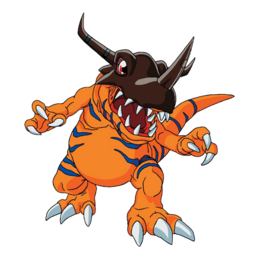
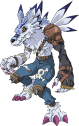
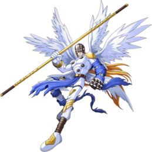

-
Greymon
HP 1500
Descrição
Greymon é um Digimon Dinossauro. A pele craniana de Greymon endureceu de modo que está coberta por uma concha parecida com um besouro rinoceronte . É um Digimon extremamente agressivo, com um corpo como uma arma letal coberta de garras afiadas e chifres gigantescos. No entanto, é altamente inteligente e, se você conseguir domá-lo, provavelmente não há nenhum monstro tão forte.
-
Weregarurumon
HP 1000
Descrição
Um Digimon Homem-Besta que evoluiu de Garurumon e tornou-se capaz de andar sobre duas patas. Ao tornar-se bípede, perdeu a velocidade, mas tornou-se num Digimon de estilo comando com maior poder ofensivo e defensivo, além de ter desenvolvido uma personalidade tática. As suas técnicas de pontapé, facultadas pela força de pernas que herdou de Garurumon, são bastante fortes, pelo que compete pelo primeiro ou segundo lugar em capacidades de salto, entre os outros Digimons. Para além disto, é rico em lealdade e tem e uma personalidade confiável, executando fielmente a missão que o seu mestre lhe der. O seu movimento especial é cortar o oponente em pedaços com as garras afiadas em ambas as mãos.
-
Angemon
HP 1600
Descrição
Um Digimon Anjo com seis asas brilhantes, cujo corpo é revestido com um tecido de tão puro branco que parece divino. É um ser de perfeita virtude e, apesar de o descreverem como um Digimon que traz felicidade, ao confrontar o mal tudo que faz é atacar, com extrema calma, até que o oponente seja completamente aniquilado. Nas várias vezes em que o Digital World é visitado por uma crise, é dito que ele desce para liderar Digimons da mesma espécie. Devimon, que foi conquistado pelo lado negro, era originalmente desta espécie. O seu movimento especial consiste em golpear o adversário com o seu punho a brilhar dourado.